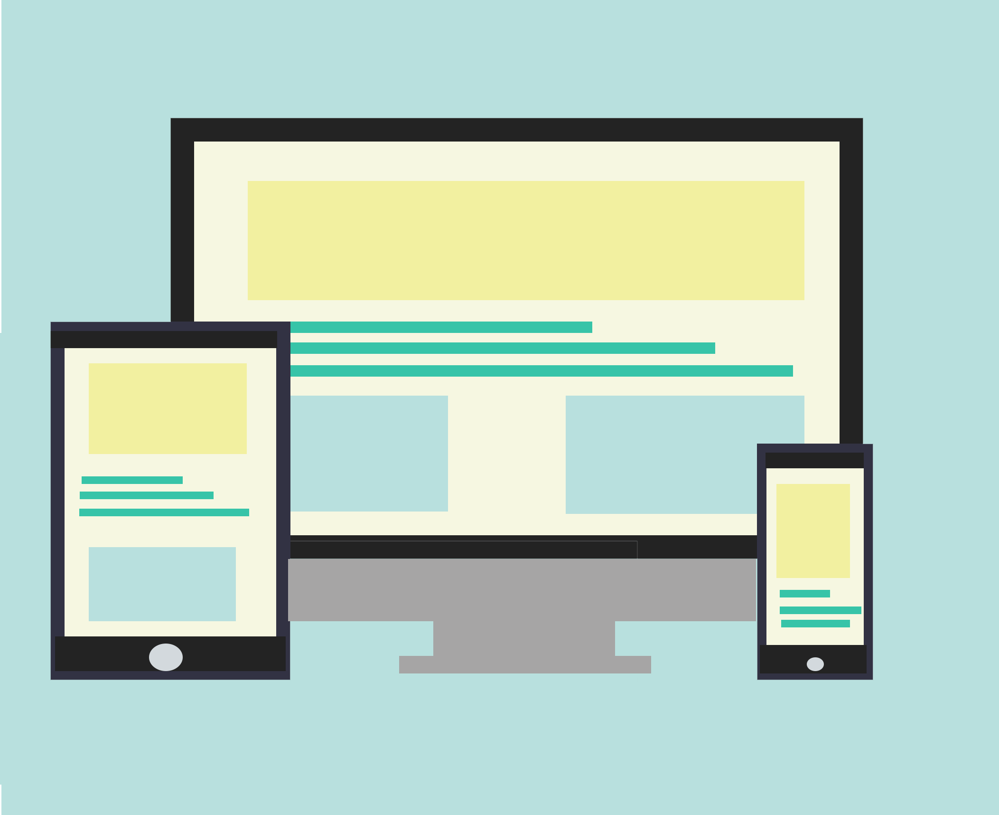
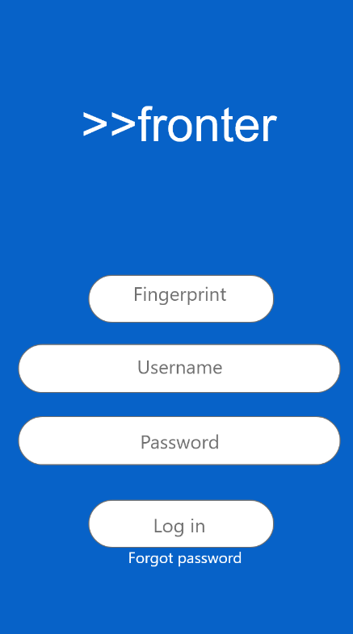
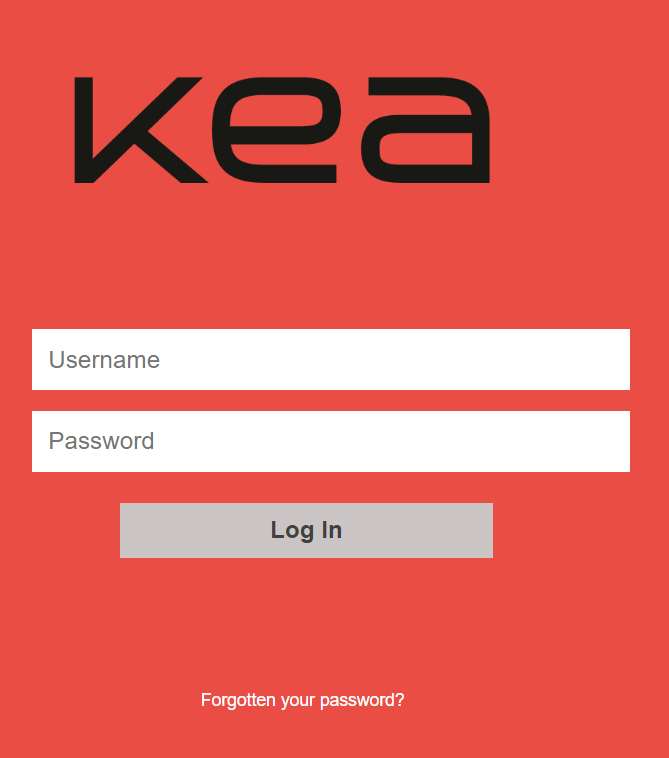
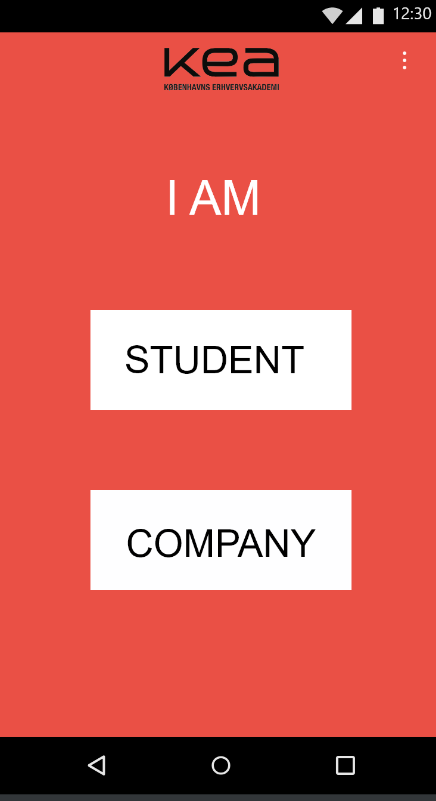

Basic UX
This theme was about understending user needs and also keeping in mind the business goal.
Design Sprint
For this project I was to develop a prototype of an improved Fronter.
I added some improvements like fingerprint login, notification system, chat, reminder and a different system of crating projects and shared projects.
Web prototype
Here we had to code a functional digital solution for the prototype. We improved the structure, we used the icons and KEA representative colors.
Native app
In this group project we created a nativ app for android and the goal was to have an app where the KEA students can upload their work and the company can search throught topics and if they find something intersing, they can contact that person.